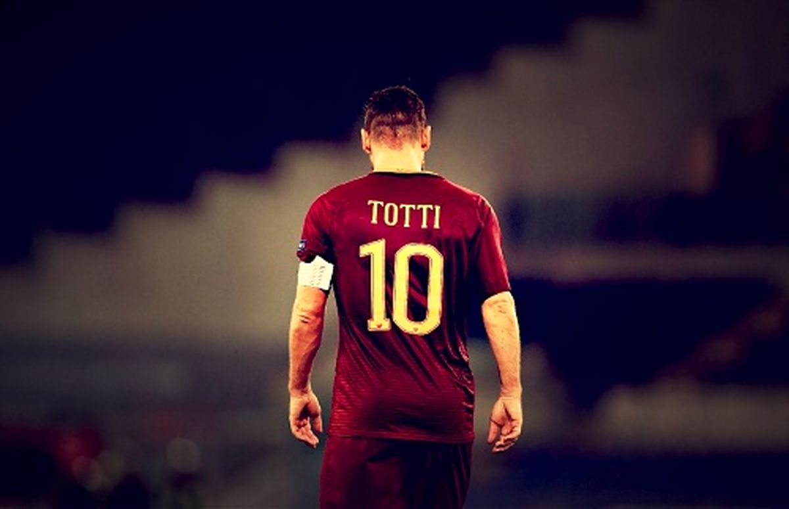
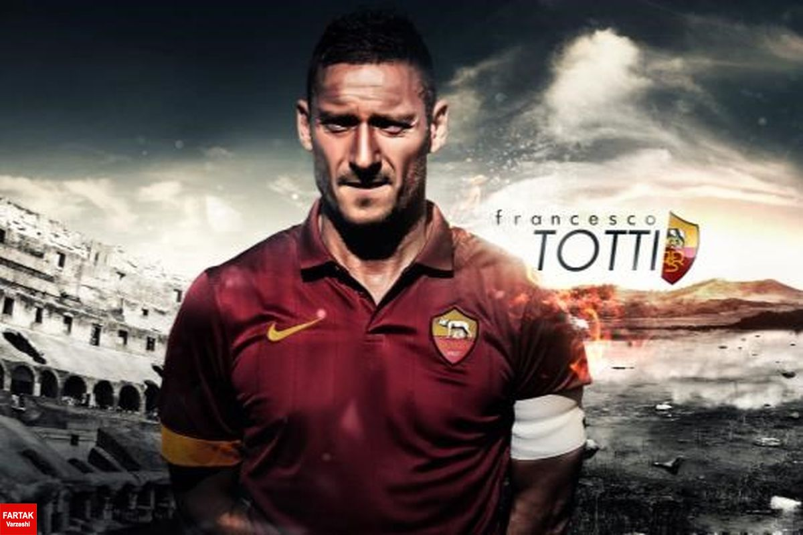

فرانچسکو توتی در ۲۷ سپتامبر ۱۹۷۶ در خانواده ای کاتولیک در رم متولد شد. پدر او لورنزو توتی (کارمند سابق بانک) و مادر او فیورلا توتی (خانه دار) بودند. فرانچسکو به همراه برادر بزرگ خود، ریکاردو توتی در محله پورتا مترونیا بزرگ شدند. فرانچسکو از همان کودکی عاشق رم بود و الگوی او جوزپه جیانینی، کاپیتان وقت باشگاه بود. عشق و علاقه به رم از طریق پدربزرگ او، جانلوکا توتی به لورنزو، ریکاردو و فرانچسکو رسیده بو د.
او در ۲۸ مه ۲۰۱۷ در بازی مقابل جنوا رسماً از دنیای فوتبال خداحافظی کرد و مراسم خداحافظی وی در ورزشگاه المپیک رم برگزار شد.
گل های مهم فرانچسکو توتی را در این قسمت میتوانید مشاهده کنید